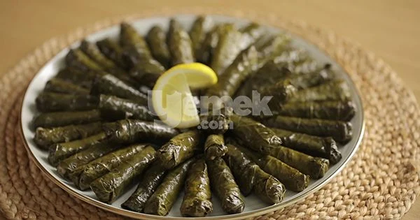

Yaprak Sarma

Description
Stuffed grape leaves with olive oil is one of the most popular and timeless recipes that can be eaten at any time of the day, from festive meals to golden days. You can prepare wonderful stuffed wraps after spending some time and following certain tips and taste secrets. Thinly wrapped stuffed grape leaves with plenty of olive oil and lemon are preferred. If you want, you can prepare it using pickled vine leaves or fresh vine leaves. Here is a recipe for stuffed grape leaves with olive oil that you will never get enough of!
The most important secret of the recipe is not to fill the leaves too much. In this way, the leaves will not burst while cooking and will be at perfect consistency. For those who ask how to make stuffed vine leaves, how to prepare stuffed vine leaves, and how to cook stuffed vine leaves, we explain how to make stuffed vine leaves with olive oil, step by step, with visuals. He says this recipe is not to be missed, its taste and appearance are perfect, we take you to the best recipe for stuffed grape leaves with olive oil.
Ingredients
- 300 grams of vine leaves
- 1 lemon
- 4 tablespoons of olive oil
- 1.5 cups hot water
- For the Inner Filling:
- 1/2 cup olive oil
- 3 medium sized onions
- 1.5 cups of rice
- 1 glass of hot water
- 1 tablespoon of peanuts
- 1 tablespoon of currants
- 1 teaspoon of salt
- 1 teaspoon black pepper
- 1 teaspoon of mint
- 1 teaspoon of new spring
- 1/2 teaspoon cinnamon
Steps to Prepare
- To prepare the stuffing of the stuffing; Heat half a glass of olive oil in a wide-based pot. Fry 3
onions until they turn light brown. Then add 1.5 tablespoons of pine nuts and continue roasting.
- Roast 1.5 cups of rice, which you have soaked in warm water for about 5 minutes and then drained,
together with the onions until the rice becomes transparent.
- Then respectively; Add 1 tablespoon of currants, 1 teaspoon each of salt, black pepper, allspice
and cinnamon and mix.
- Add about 1 glass of hot water and cook the stuffing on low heat for 5 minutes, then remove it from
the stove.
- Open the pickled vine leaves on the counter, leaving the veined parts on top. In the middle part of
each leaf; Prepare and share a teaspoon of the warmed stuffing.
- Bring the edges in and move from the wide part to the tip.
- Wrap all the leaves tightly.
- Cover the bottom of the sarma pot with a few vine leaves.
- Arrange the stuffed wraps in a row, side by side. After slicing the lemon into rings, place it on
the wraps.
- To prevent them from opening during cooking; Cover them with a flat serving plate. After adding 1.5
cups of hot water and 2 tablespoons of olive oil to the pot, cook the stuffed wraps over low heat for about 35 minutes.
- According to desire; Serve warm or cold.